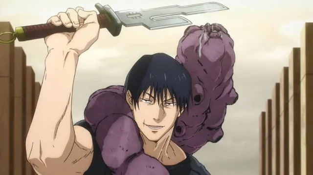
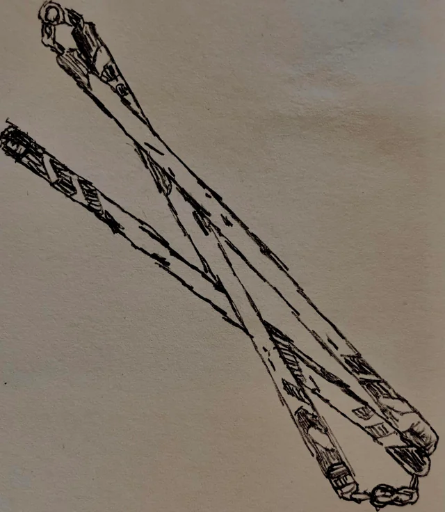
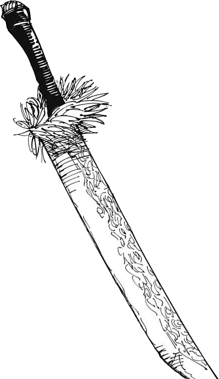

Historia
Toji era membro do clan Zenin, um clan que adimira muito a energia amaldiçoada, mas o Toji nasceu com a restrição celestial, fazendo com que ele não tenha um pingo de energia amaldiçoada. No futuro ele se torna um caçador de recompensas e sai do clan Zenin, indo para o clan Fushiguro, que era o clan da sua esposa, e acabam tendo dois filhos, Megumi Fushiguro e Tsumiki Fusiguro
Como ele lutava
Por não ter energia amaldiçoada ele decidiu usar uma maldição para levar suas armas amaldiçoadas
Primeira Arma Amaldiçoada: Lança Invertida do Céu
É uma adaga de duas laminas de ferro capaze de anular tecnicas amaldiçoadas ao entrar em contato direto com o alvo

Segunda Arma Amaldiçoada: Nuvem Brincalhona
São tres bastoes de ferro unidos por correntes um ao outro que amplifica a força fisica do usuario
Terceira Arma Amaldiçoada: Katana da Alma Dividida
É uma katana capaz de ignorar a resistencia fisica para cortar diretamente a alma do alvo
